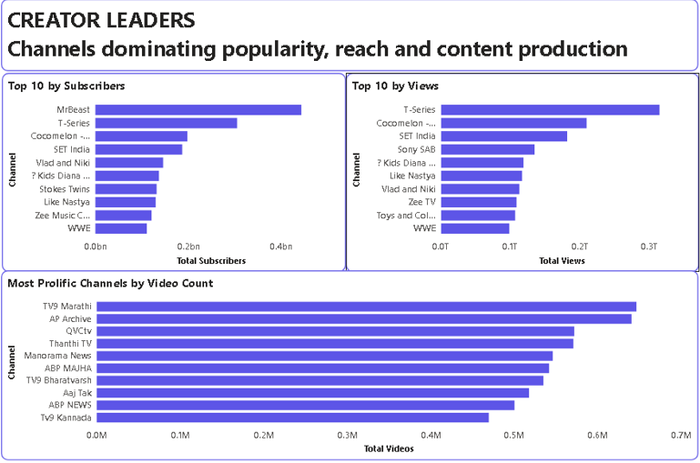

Data Analysis
I clean, validate and analyse datasets to identify patterns, trends and useful findings that support better decisions.
DATA ANALYST · HEALTHCARE ANALYTICS
I work with SQL, Power BI, Excel and statistical analysis to transform raw data into clear insights, structured decisions and actionable outcomes.
Psst… this looks even better on a laptop. ✦
TOOLBOX
Tools and analytical skills I use to clean, understand, visualise and communicate data.
01. WHAT I DO
I start with the question behind the numbers, then use data to understand what is happening and communicate it clearly.
I clean, validate and analyse datasets to identify patterns, trends and useful findings that support better decisions.
I turn analytical findings into structured dashboards and reports that make performance easier to understand.
I apply appropriate statistical methods to research data and interpret analytical outputs in a clear and structured way.
I bring a healthcare perspective to analytical problems, connecting clinical and research questions with data-driven thinking.
02. SELECTED WORK
A collection of analytics, visualisation and research projects built around practical data questions.
Data Analytics Internship
Practical analytics work covering data preparation, SQL analysis and visualisation across multiple internship tasks.

Data Analytics
A practical analytics project demonstrating data analysis, SQL and structured problem-solving through an assessment.

Collaborative Analytics
A collaborative analytics project focused on transforming website traffic data into useful business insights and visualisations.

Statistical Analysis
A statistical analysis project applying appropriate methods to health research data and interpreting analytical outputs.

Creator Performance Analytics
An analytics project examining YouTube creator performance using SQL for preparation and analysis, followed by Power BI visualisation.


03. ABOUT ME
I'm Oluwapelumi, a Physiotherapy student and aspiring Data Analyst interested in understanding how data can answer practical questions.
My approach is simple: understand the problem, understand the data, analyse what is happening, and communicate the result clearly.
My work sits at the intersection of data analysis, visualisation, statistics and healthcare. I use tools such as SQL, Power BI, Excel and SPSS to turn information into something people can understand and act on.
I'm continuously learning, building projects and developing a stronger analytical foundation while bringing my healthcare background into the way I approach data.
04. LET'S WORK TOGETHER
Whether you're looking for analytical support, dashboard development, research analysis or someone interested in turning data into useful insight, let's talk.